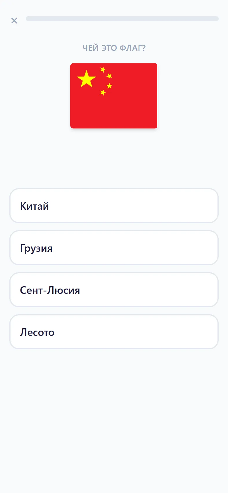
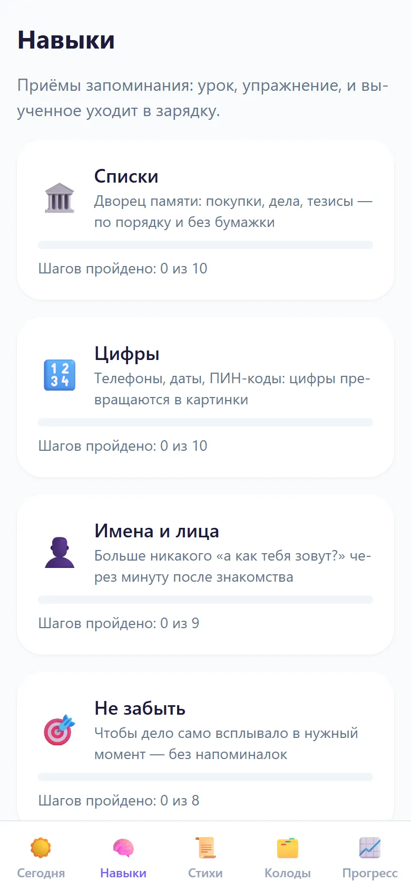
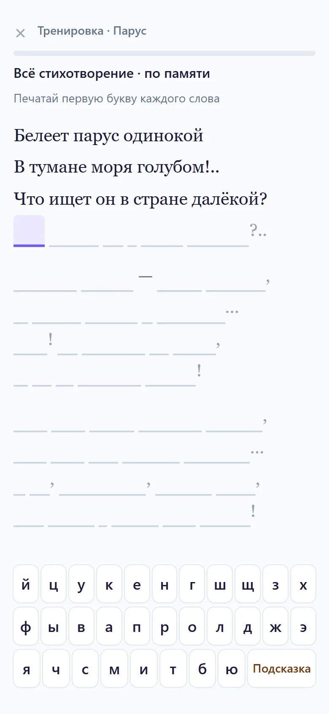
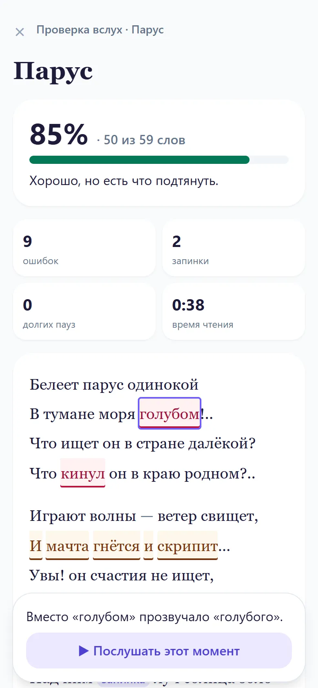

Приложение, которое учит запоминать
Запомни шесть вещей. В конце страницы спрошу.
Это дворец памяти, один из приёмов Памяти+. Пройди по квартире от двери и представь каждую вещь на её месте. Чем нелепее картинка, тем лучше. Хватит минуты.
- Прихожая: на коврике пыхтит самовар
- Ванная: в воде лежит якорь
- Кухня: на плите кипит арбуз
- Комната: вместо телевизора барабан
- Балкон: на перилах кактус в ушанке
- Спальня: над кроватью раскрыт зонт
Открываешь и занимаешься, остальное приложение считает само
Зарядка занимает 10–15 минут в день. Приложение показывает то, что ты вот-вот забудешь, и ответ надо вспомнить самому. Кнопки «я помню» здесь нет, обмануть себя не получится.



Стих выучен? Расскажи его вслух
Приложение послушает и покажет, где ошибка, пропуск, запинка или долгая пауза. Любое отмеченное место можно переслушать своим голосом.
Белеет парус одинокой
В тумане моря голубом!..прозвучало «голубого»
Что ищет он в стране далёкой?
Что кинул он в краю родном?..прозвучало «бросил»
Всё распознаётся на самом телефоне: запись никуда не уходит и стирается, когда закрываешь экран. Модуль речи весит 46 МБ и скачивается, только если захочешь.
Распознавание бывает неточным. Спорные слова приложение помечает как неразборчивые и в счёт не берёт.

Память целиком не накачаешь. Приёмы работают
Упражнения улучшают в основном то, что ты тренируешь. Поэтому Память+ учит конкретным приёмам. Вот на чём они держатся.
- Интервальные повторения
- Повторяешь как раз перед тем, как начнёшь забывать.
- Dunlosky и др., 2013: высокая польза
- Вспоминание вместо перечитывания
- Вытащить ответ из головы полезнее, чем посмотреть на него ещё раз.
- Там же: высокая польза
- Дворец памяти
- За 6 недель тренировки люди стали запоминать примерно вдвое больше слов, эффект держался 4 месяца.
- Dresler и др., 2017
- «Когда — то» для дел
- План «когда увижу дверь, возьму ключи» срабатывает чаще, чем просто «не забыть».
- Gollwitzer, Sheeran, 2006
- Чего здесь нет
- Мозговых игр: они улучшают в основном результат в самой игре.
- Soveri и др., 2017
Порядок упражнений и оценка по времени ответа — наши правила, а не доказанный метод. Проверяй себя на экране «Прогресс».
Контрольная
Контрольная
Как и договаривались. Заходи в квартиру и вспоминай по порядку. Наверх подглядывать нельзя.
Как поставить
Бесплатно, без регистрации и рекламы. Работает без интернета, прогресс хранится только в телефоне.
Android
- Скачай файл на телефон.
- Открой его. Телефон спросит разрешение: приложения нет в Google Play, так и должно быть.
- Нажми «Установить».
- Разреши уведомления: приложение будет напоминать о зарядке.
Новые версии приходят внутри приложения.
iPhone
- Открой приложение в Safari.
- Нажми «Поделиться», затем «На экран “Домой”».
- Запускай с иконки на экране.
Напоминать iPhone-версия не умеет: поставь ежедневный будильник. Если страница не открывается, попробуй через мобильный интернет.